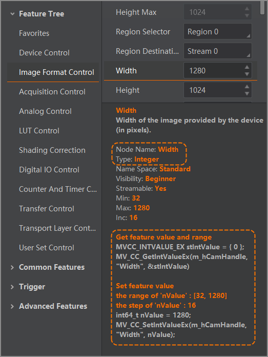

Connect to the device via the client.
Select a certain feature parameter on the client feature tree to view the parameter node information below the feature tree.
The following is an example of the parameter Width.
Integer Node:
Enumeration Node:
Float Node:
Boolean Node:
String Node:
Command Node: Call MV_CC_SetCommandValue() to set command node.
Set Optimal Packet Size
Before you start image acquisition after turning on the GigE camera, call MV_CC_GetOptimalPacketSize() to detect current network, and get optimal communication packet size.
You can configure the packet size of image grabbing with this optimal packet size to improve the transmission speed of image grabbing.
Set Resending Packet
GigE Camera communicates data via network, so in some abnormal cases such as network congestion, data packet received from the SDK is incomplete. Resending command can control the device to resend the incomplete data.
You can refer to the following sample codes and call MV_GIGE_SetResend() to enable resending packet.
If the SDK does not receive data resent from the device, you need to control SDK to send the resending command again.
You can refer to the following example, call MV_GIGE_SetResendTimeInterval() to control the interval of single resending packet, and call MV_GIGE_SetResendMaxRetryTimes() to configure maximum resending times.
Control channel is used to transmit control command. Abnormal control channel may result in slower execution of transmission control command. Therefore, the interface times out and an exception will be returned.
You can refer to the following sample code, and call MV_USB_SetSyncTimeOut() to adjust the timeout duration of control channel, so as to be compatible with this type of exception.
Stream channel is used to transmit image data. Insufficient bandwidth of stream channel or system resources may result in transmission failure and resource creation failure.
You can refer to the following sample code, and call MV_USB_SetTransferSize() to adjust the image data packet size, or call MV_USB_SetTransferWays() to adjust the number of USB3 vision stream channels, so as to reduce resources occupied by SDK.